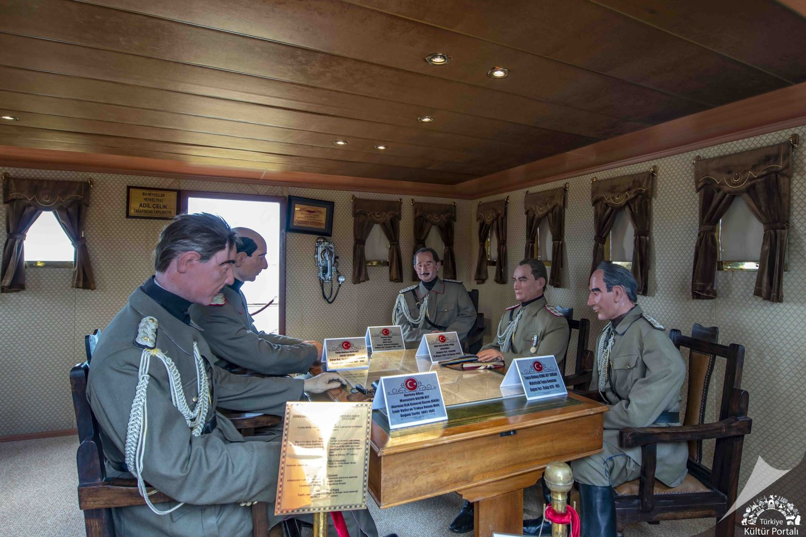

Bandırma Vapuru

Türkiye Cumhuriyeti’nin kuruluşunda önemli bir rolü olan Bandırma Gemisi, 1878 yılında Glasgov'da
"Trocadero" ismiyle inşa edilmiş ve sorasında Kymi adıyla uzun yıllar yük taşımıştır. 12 Aralık 1891 yılında
batan gemi çıkarılarak onarılmış ve aynı yıl içinde yeniden yüzdürülmüştür.
1894 yılında o zamanki Deniz Yolları İşletmesi anlamına gelen İdare-i Mahsusa'ya nakledilen gemi bu tarihten itibaren "Panderma" adıyla Osmanlı denizlerinde yük ve yolcu taşımaya başlamıştır. 28 Ekim 1910 tarihinde İdare-i Mahsusa adı "Osmanlı Seyrüsefain İdaresi" (Osmanlı Denizcilik İşletmesi) olunca geminin adı "Bandırma" olarak değiştirilmiş ve posta vapuru haline getirilmiştir.
19 Mayıs 1919'da Gazi Mustafa Kemal Atatürk ve silah arkadaşlarını Samsun'a getirdikten sonra yine posta hizmetlerine devam etmiş ve 1924 yılında "Türkiye Seyrüsefain İdaresi" tarafından hizmet dışı bırakılmıştır. 1925 yılında İlhami Söke'ye satılan gemi aynı şahıs tarafından 4 ay içinde Haliç'te sökülmüştür. Geminin orijinal çizimleri referans alınarak yeniden yapılmış ve 07 Şubat 2005 tarihinde Bandırma Vapuru'nun kullanım hakkı ve işletmesini devralan Samsun Büyükşehir Belediyesi tarafından müze haline dönüştürülerek 19 Mayıs 2006 tarihinde ziyarete açılmıştır.
Müzede ayrıca Samsun ve ilçelerinden İstiklal Savaşı'nda kaybettiğimiz 1200 şehidimizin adlarının yer aldığı şehitler yazıtı, Milli Mücadele'yi anlatan 10 adet bronz rölyef, yedi figürlü Milli Kurtuluş Anıtı ve İstiklal Mücadelesi'nde kahraman Mehmetçik tarafından kullanılan top, tüfek, torpido, denizaltı mayınları ve uçaksavar gibi savaş malzemeleri de sergilenmektedir.
1894 yılında o zamanki Deniz Yolları İşletmesi anlamına gelen İdare-i Mahsusa'ya nakledilen gemi bu tarihten itibaren "Panderma" adıyla Osmanlı denizlerinde yük ve yolcu taşımaya başlamıştır. 28 Ekim 1910 tarihinde İdare-i Mahsusa adı "Osmanlı Seyrüsefain İdaresi" (Osmanlı Denizcilik İşletmesi) olunca geminin adı "Bandırma" olarak değiştirilmiş ve posta vapuru haline getirilmiştir.

19 Mayıs 1919'da Gazi Mustafa Kemal Atatürk ve silah arkadaşlarını Samsun'a getirdikten sonra yine posta hizmetlerine devam etmiş ve 1924 yılında "Türkiye Seyrüsefain İdaresi" tarafından hizmet dışı bırakılmıştır. 1925 yılında İlhami Söke'ye satılan gemi aynı şahıs tarafından 4 ay içinde Haliç'te sökülmüştür. Geminin orijinal çizimleri referans alınarak yeniden yapılmış ve 07 Şubat 2005 tarihinde Bandırma Vapuru'nun kullanım hakkı ve işletmesini devralan Samsun Büyükşehir Belediyesi tarafından müze haline dönüştürülerek 19 Mayıs 2006 tarihinde ziyarete açılmıştır.
Müzede ayrıca Samsun ve ilçelerinden İstiklal Savaşı'nda kaybettiğimiz 1200 şehidimizin adlarının yer aldığı şehitler yazıtı, Milli Mücadele'yi anlatan 10 adet bronz rölyef, yedi figürlü Milli Kurtuluş Anıtı ve İstiklal Mücadelesi'nde kahraman Mehmetçik tarafından kullanılan top, tüfek, torpido, denizaltı mayınları ve uçaksavar gibi savaş malzemeleri de sergilenmektedir.